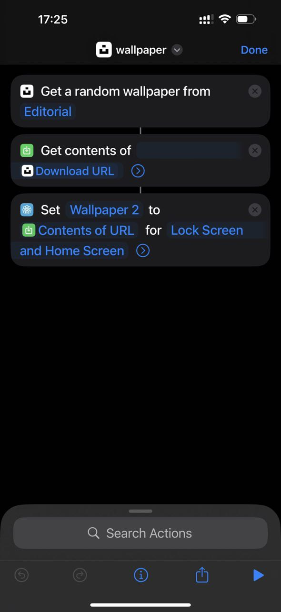

आइओएस शॉर्टकट्स को मास्टर करना | AI द्वारा उत्पन्न और अनुवादित
शॉर्टकट्स टिप्स
-
शॉर्टकट्स ऐप का उपयोग करके एक शॉर्टकट बनाएं जो तब ट्रिगर होता है जब आप ऑफिस पहुंचते हैं। यह शॉर्टकट स्वचालित रूप से WeCom ऐप खोल देगा, जिससे आप पंच इन कर सकेंगे।
-
जब आप मैकाओ SIM कार्ड का उपयोग सेलुलर नेटवर्क के रूप में करते हैं, तो वैश्विक नेटवर्क तक पहुंचने के लिए VPN की आवश्यकता नहीं होती है। हालांकि, जब आप Wi-Fi से कनेक्ट होते हैं तो VPN पर स्विच करना असुविधाजनक हो जाता है। शॉर्टकट्स इस मामले में मदद कर सकते हैं।
-
आप शॉर्टकट्स का उपयोग करके अपने आप को बास्केटबॉल खेलने या अन्य गतिविधियों के लिए नोटिफाई कर सकते हैं।
-
शॉर्टकट्स उन नोटिफिकेशनों के लिए उत्कृष्ट हैं जो उपयोगी होते हैं लेकिन अगर वे गायब हो जाएं तो आवश्यक नहीं होते।
-
शॉर्टकट्स का उपयोग करके अपने आप को मॉर्गेज, मासिक क्रेडिट बिलों का भुगतान करने या परीक्षाओं के लिए पंजीकरण करने की याद दिलाएं।
iOS के लिए वॉलपेपर चेंजर शॉर्टकट
https://www.icloud.com/shortcuts/f972a5bc6f9c43109f7461465b4be2ee
यह शॉर्टकट iOS पर वॉलपेपर बदलता है। मैं इसे महीनों से उपयोग कर रहा हूँ, और यह अद्भुत तरीके से काम करता है। सप्ताह के विशिष्ट दिनों पर, 3:14 PM पर, यह शॉर्टकट स्वचालित रूप से मेरे iPhone पर चलता है। यह सरल और प्रभावी है। यह एक छवि को Unsplash से डाउनलोड करता है और इसे वॉलपेपर के रूप में सेट करता है। ध्यान दें कि आपको पहले Unsplash ऐप को इंस्टॉल करना होगा।
इस तरह का उपयोग करना अक्सर एक वॉलपेपर एप्लिकेशन खरीदने या खरीदने से बेहतर होता है।
मैंने 3:14 PM पर एक रिमाइंडर सेट करने के बारे में एंड्रे कारपैथी से सीखा, जो उस समय एक फोटो कैप्चर करने के लिए उपयोग करते थे।
 स्रोत: स्क्रीनशॉट
 स्रोत: स्क्रीनशॉट
स्रोत: स्क्रीनशॉट